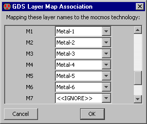
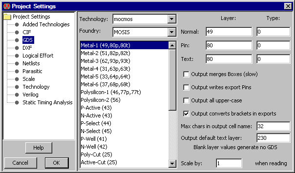
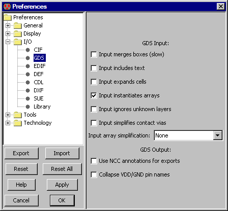

|
GDS II (also called "Stream" format) is used as an interchange between design systems and fabrication facilities.
For information on reading and writing GDS, see
Section 3-9-2 and
Section 3-9-3, respectively.
In GDS files, there are no names for each layer, just a pair of numbers (the layer number and type).
It is important that Electric know how these values correspond with layers so that it can properly
read and write GDS files.
You can set the correspondences by using the GDS Map File... command (in menu File / Import)
to read a GDS map file.
You can also use the GDS Project Settings
(in menu File / Project Settings..., "GDS" tab) to edit the GDS numbers and
control other aspects of GDS input and output.
|  |
In the GDS Project Settings dialog, the list on the left shows all of the Electric layers in the current technology.
By clicking on a layer name, its GDS numbers are shown in the top-right and can be edited.
In addition to GDS numbers to use for layout, there are also two other types of GDS numbers:
pin (for exports) and text (for export names).

These dialog elements apply to writing GDS:
-
"Output merges Boxes".
This controls the merging of adjoining geometry.
It is an issue because of the duplication and overlap that occurs wherever arcs and nodes meet.
The default action is to write each node and arc individually.
This makes the file larger because of redundant box information,
however it is faster to generate and uses simpler constructs.
If you check this item,
all connecting regions on the same layer are merged into one complex polygon.
This requires more processing, produces a smaller file, and generates more complex constructs.
-
"Output writes export Pins".
This controls whether pins are written to the GDS file for each export.
If checked, and there is a valid pin layer, then it is written.
-
"Output all upper case".
This controls whether the GDS file uses all upper case.
The default is to mix upper and lower case, but some systems insist on upper-case GDS.
-
"Output converts brackets in exports".
This controls whether the square brackets used in array specifications should be converted (to underscores).
Some GDS readers cannot handle the square bracket characters.
-
"Max chars in output cell name".
This limits the number of characters in a cell name.
Names longer than this are truncated, and adjusted to ensure uniqueness.
- "Output default text layer".
This is the layer number to use when writing text.
When exports are being written, and there is a text layer number associated with the appropriate Electric layer,
then that layer number is used instead of this default number.
|
You can also use the GDS Preferences
(in menu File / Preferences..., "I/O" section, "GDS" tab) to control GDS input and output.
For the difference between Preferences and Project Settings, see
Section 6-3.
|  |
These dialog elements are available in the GDS Preferences:
- "Input merges boxes (slow)".
This requests GDS input to combine overlapping boxes into complex polygons.
It takes more time, but produces a more compact database.
- "Input includes text".
Text annotations in the GDS file can often clutter the display, so they are ignored during input.
If you check this item, annotation text will be read and displayed.
- "Input expands cells".
This controls whether cell instances are expanded or not in the Electric circuit.
By default, cell instances are not expanded (they appear as a simple box).
If you check this item, cells are expanded so that their contents are displayed.
Expansion of cells can always be changed after reading GDS by using the subcommands of the Expand Cell Instances
and Unexpand Cell Instances commands of the Cells menu.
- "Input instantiates arrays".
This controls whether or not arrays in the GDS file are instantiated.
By default, arrays are instantiated fully, but this can consume excessive amounts of memory if there are large arrays.
If you uncheck this item, only the upper-left and lower-right instance are actually placed.
- "Input ignores unknown layers".
This controls whether unknown layers in the GDS file will be ignored, or placed in the circuit.
By default, unknown layers appear as DRC-Nodes (special nodes used to indicate DRC errors, which appear as orange squares).
By checking this item, the unknown layers are simply ignored.
- "Input simplifies contact vias".
This requests GDS input to find combinations of metal and via cuts and replace them with Electric contacts.
It takes time, and may simplify some GDS.
- "Use NCC annotations for exports".
The network consistency checker (NCC)
allows special circuit annotations to join two networks
(see Section 9-7-4).
For example, two separate power networks may be joined higher in the circuit hierarchy,
and the NCC needs to know this at the current level of design.
This checkbox requests that the NCC annotations be used when exporting GDS.
It enables external circuit analysis programs (such as Assura) to properly understand the circuit connectivity.
- "Collapse VDD/GND pin names".
Requests that all names starting with "VDD" or "GND" be merged into a single power or ground signal.